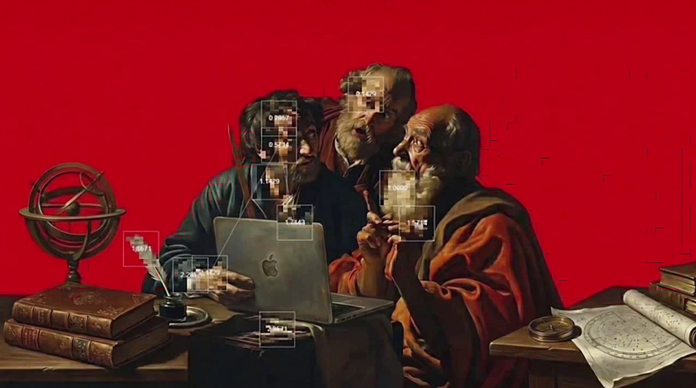
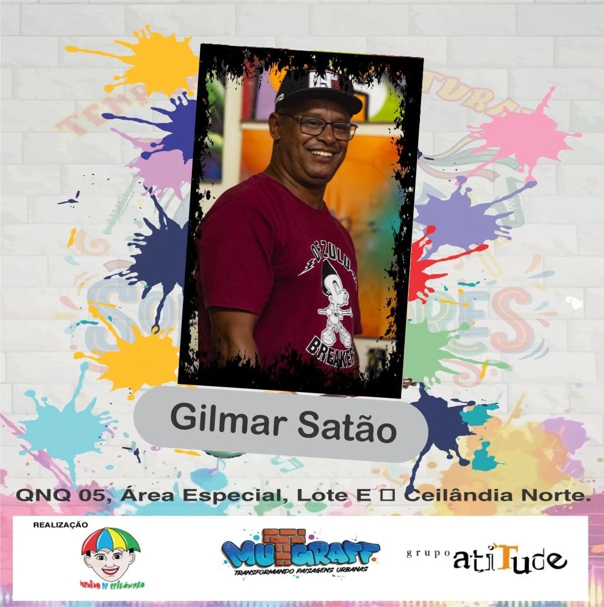

GILMAR SATÃO · CEILÂNDIA / DF
MURO EM MOVIMENTO.
Grafiteiro, jornalista, educador e produtor cultural. Da Ceilândia para a memória visual de Brasília.
Grafite, Hip Hop, Ceilândia, Brasília e memória urbana.

SOBRE
O ARTISTA.
Nascido e criado na Ceilândia, Gilmar Satão é grafiteiro, jornalista, educador, produtor cultural e uma das vozes mais antigas e ativas da cultura Hip Hop em Brasília.
Começou aos 12 anos. Da Ceilândia, levou seu traço wild-style a vários estados e à França, tornando-se referência na memória visual de Brasília.
Em 1993, com Sowtto e Supla, fundou a OS-3S — a primeira crew de grafite do Distrito Federal. Uma história que liga o grafite à cultura Hip Hop e ao lugar onde nasceu e cresceu.
12anos de idade.
O começo no grafite.
Nascido e criado na Ceilândia, Satão começou a grafitar aos 12 anos. A cultura de rua faz parte da sua história desde o início.
Conheça o artista1993Fundação da OS-3S
com Sowtto e Supla.
Satão, Sowtto e Supla fundaram a OS-3S em 1993. Um encontro que faz parte da memória do grafite no Distrito Federal.
Explore o legado1ªcrew de grafite
do Distrito Federal.
A primeira crew de grafite do DF conecta arte, Hip Hop e a cidade. Essa trajetória continua nos muros, na educação e nos encontros culturais.
Veja as áreas de atuaçãoLEGADO
UM TRAÇO NA MEMÓRIA DE BRASÍLIA.
O wild-style de Satão faz parte da memória visual de Brasília. Da Ceilândia à França, um traço que carrega sua origem.
GRAFITE, EDUCAÇÃO
E CULTURA.
Grafite, educação e produção cultural. Diferentes formas de manter a cultura Hip Hop em movimento.


Cultura Hip Hop
Jornalismo e produção cultural com raízes na Ceilândia.
Propor um encontro no InstagramOBRAS PELA CIDADE.
Muros, letras e encontros. Registros do acervo de Satão, com novas imagens no @gilmar_satao.


Foto a inserir
PRÓXIMOS ENCONTROS.
Murais, oficinas e encontros. A programação entra aqui quando estiver confirmada.
AGENDA ABERTA A NOVAS CONVERSASO próximo encontro
O próximo encontro
pode começar com você.
A programação pública está em atualização. Assim que houver datas confirmadas, elas entram aqui.
MuraisEducaçãoCultura Hip Hop
Propor um encontroAcompanhar novidades no InstagramNA IMPRENSA.
Trajetória, cultura e memória da cidade em pauta.
Grafite, memória urbana e cultura Hip Hop. Para entrevistas e conversas sobre a trajetória de Satão:
Falar sobre imprensa no Instagram“[CITAÇÃO CURTA SOBRE O TRABALHO DE SATÃO]”
“[CITAÇÃO CURTA SOBRE O TRABALHO DE SATÃO]”
Para murais, educação, encontros culturais ou imprensa.
VAMOS CONVERSAR?
Ir para o contatoVAMOS FECHAR
UM TRABALHO?
Murais, oficinas, palestras, produção cultural ou imprensa. Conte sua ideia e vamos conversar.
Conversar com Satão
Pelo Instagram · @gilmar_satao
Do primeiro traço ao próximo encontro.
Na mensagem, conte o tipo de projeto, o local e a data que você tem em mente.
Conheça o trabalho antes de conversar